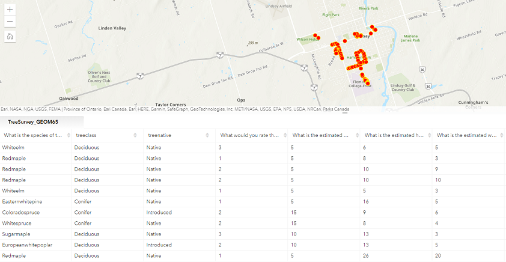
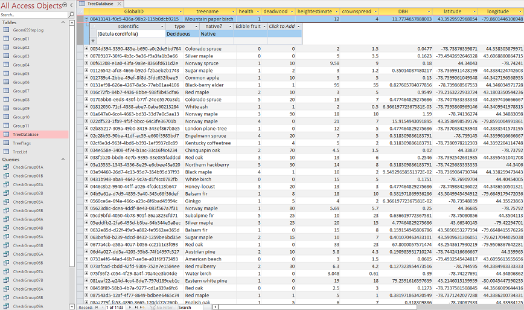

GIS Database Principles
Overview
During our studies at Fleming College, all members of our team have gained a basic understanding of database principles. This includes an understanding of database structure, how tables relate to one another within data models, how reliable data transactions occur, and how to plan efficient databases. As well, we have learned basic data normalization principles that prevent the unnecessary duplication of data and allow for easy information retrieval. We have also learned how to use the SQL programming language to manipulate data within Microsoft Access, a skill that we have applied in multiple projects and lab exercises over the course of the past several months. This includes an understanding of various statements, such as SELECT, UPDATE, and various JOIN options, including the proper syntax necessary to build working queries using manual code entry. Finally, we have received basic knowledge about spatial databases/geodatabases, including their types, structure, and limitations.
Assignments 2 and 3: Data Collection and ETL
As a part of our program of study, we were asked to create a data collection model in ArcGIS Survey123 to input and store a mix of qualitative and quantitative tree data. This included unmodified parameters such as the species of tree, the percentage of deadwood in the canopy, and the tree's longitude and latitude coordinates, as well as a calculated field for the tree's diameter at breast height (which required circumference as an input). We collected data on over 100 trees, which was collated with data from the rest of our colleagues in order to create a final dataset containing over 1000 total trees located in different parts of the country.
A preview of the data we collected in ArcGIS Survey123. As we are in-person students, our data is limited to the Lindsay area.
Following this exercise, we were furnished with the full data set, at which point we were required to extract, transform, and load the data into a properly-structured relational database using MSAccess. We constructed a schema that we felt could be used to efficiently store the necessary information, which resulted in a 17-field main tree database which was further linked to a table of tree names (with type and status fields) and a table for storing various descriptive flags. During this process, we encountered several decisions that needed to be made about how to transform the data so that it would be consistent within our new database. For example, multiple groups collected a vertical accuracy statistic, but most did not. This forced us to decide between appending the data to another field or creating a vertical accuracy field and populating it with null values if the data was absent (with the latter being our final choice).
A preview of our final database. We have normalized the data and connected it to a separate table with the scientific name. We have also provided a flag table and checksum queries to show complete importing.
This exercise provided us with valuable experience in designing, populating, and normalizing data models. It exposed us to the reality that data is often inconsistent even in the most well-defined data collection schemes and gave us the opportunity to align that data in a similar way to how one would in the real world. While we already possessed a theoretical understanding of how to go about this process, we now feel confident in our practical ability to implement data solutions in Microsoft Access.